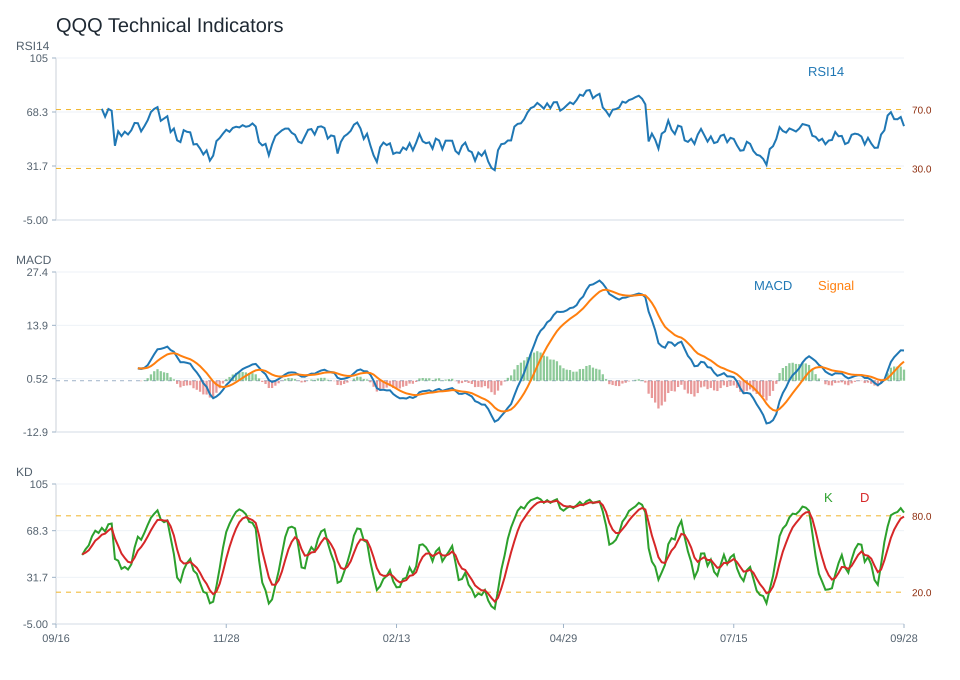

20 日
2.95%60 日
2.09%觀察等級
正向觀察市場資料
2026-09-29- 成交量27,052,300.00
- 20 日均線722.94
- 60 日均線713.87
- 200 日均線666.70
- 距 52 週高點-1.27%
- 距 52 週低點32.18%
技術指標
Python 計算- RSI1459.21
- MACD hist2.16
- KD K/D78.65 / 79.80
- ADX13.32
- 布林上緣751.85
- 布林下緣694.03
量價與事件
規則式分析- 量價型態量能中性
- 量價分數1
- 20 日量比0.81
- OBV 20 日變化13.60%
- 事件偏向事件中性
- 事件分數1
研究訊號與觀察等級
不是買賣建議正向觀察；研究訊號 偏多，分數 4。
部分條件偏正向，可持續追蹤後續資料是否延續。
- 站上 20 日均線
- 站上 200 日均線
- RSI 位於中性偏強區
- MACD histogram 為正
- KD 偏弱
- 量價型態：量能中性
- 量價未出現明確偏多或偏空結構
- OBV 20 日量壓偏正向
回測摘要
歷史資料研究| 策略 | CAGR | Sharpe | 最大回撤 | 勝率 | 交易次數 |
|---|---|---|---|---|---|
| 價格高於 200 日均線 | 15.88% | 1.04 | -13.56% | 56.64% | 4 |
| 20/60 日均線交叉 | 12.58% | 0.87 | -15.17% | 54.65% | 9 |
| 買進持有 | 28.26% | 1.29 | -22.77% | 55.81% | 1 |
圖表
價格 / 量價 / 技術 / 回測QQQ 價格均線

QQQ 量價關係

QQQ 技術指標

QQQ 回測